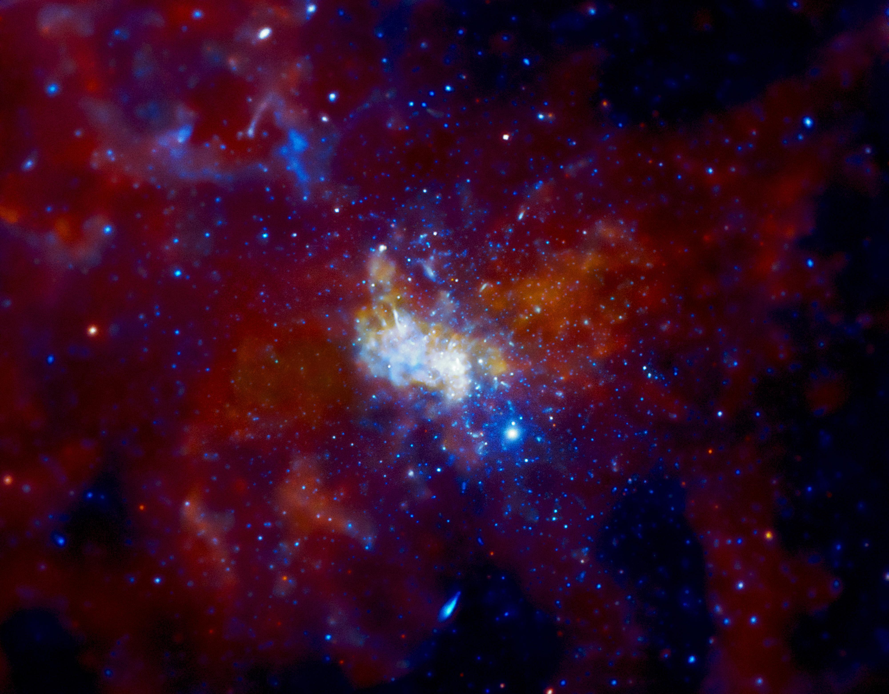

Галаксија или галактика представља гравитацијом везан систем звезда, планета, комета, сателита, неутронских звезда и осталих материја свемира. Галаксије се по величини деле на оне најмање (патуљасте) које садрже око 10 милиона звезда до енормно великих које садрже и до билион (1012) звезда.
Претпоставља се да у видљивом делу универзума постоји преко стотину милијарди (1011) галаксија. Галаксије се могу груписати на основу њихове визуелне морфологије, укључујући елиптичке, спиралне, и ирегуларне. За многе галаксије се сматра да имају црне рупе у свом активном центру. Централна црна рупа Млечног пута, позната као Сагитаријус А, има масу која је четири милиона пута већа од Сунца.
Центар наше галаксије - Сагитаријус А
Сагитаријус А, илити Стрелац А, је радио-извор који се налази у истоименом сазвежђу Сагитаријус и у нашој галаксији представља најснажнији. Састоји се из два дела — источног и западног. Источни Стрелац А је извор синхротронског зрачења и највероватније представља остатак супернове. Западни Стрелац А је облак врелог гаса у коме се налази Стрелац А*, компактан променљиви извор радио-зрачења. Овај део Млечног пута је недоступан за проучавања у видљивом делу спектра, али до Земље долазе радио, инфрацрвени и X-зраци. Захваљујући њима, могуће је пратити кретање и измерити масе звезда у Стрелцу А*. Звезде удаљене до 0,1 светлосне године се крећу пратећи Кеплерове законе око радио-извора у средишту. Ма основу трећег Кеплеровог закона израчуната је маса овог извора која износи приближно 3,7 × 106 масе Сунца. Верује се да је у питању црна рупа која представља само средиште Млечног пута. Мерења показују и да Стррелац А* нема сопствено орбитално кретање, што потврђује да је у питању средиште наше галаксије. Стрелац А* је окружен диском врелог вртлога гаса, као у случају активног галактичког језгра, само мањег интензитета.
Андромеда - галаксија нама најближа
Андромедина галаксија или М31 (Месје 31) или NGC 224 је спирална галаксија у сазвежђу Андромеда која се налази у Месјеовом каталогу објеката дубоког неба. Андромедина галаксија је удаљена је од Млечног пута приближно 2,5 милиона светлосних година. Виријална маса галаксије Андромеда истог је реда величине као и Млечни пут, са око 1 билион Сунчевих маса (2,0 × 1042 килограма). Масу било које галаксије тешко је проценити са било којом тачношћу, али дуго се мислило да је галаксија Андромеда масивнија од Млечног пута са маргином од неких 25% до 50%.